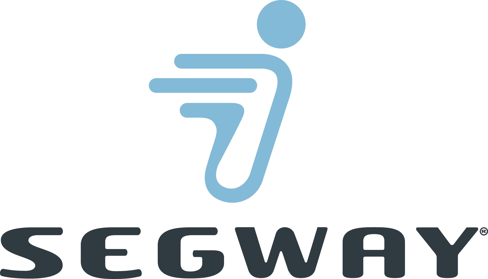

 Simply Moving
Concept Centaur prototypes have gone just over 20 miles per hour. If Concept Centaur were to be manufactured in the future, more testing would be required to determine the appropriate top speed.
Since Concept Centaur is just that—a concept—they aren't for sale. At the present time, Segway Inc. has no plans to manufacture or sell this as a product.
At present time, Segway Inc. has no plans to manufacture the Centaur. All new Segway products will be posted to our website as they are released. If you'd like, you may send an e-mail to tswallace@ualr.edu and include your name, address, and phone number to be notified of any additional information on Concept Centaur. This address is not monitored by a person, so please do not send any other requests here.